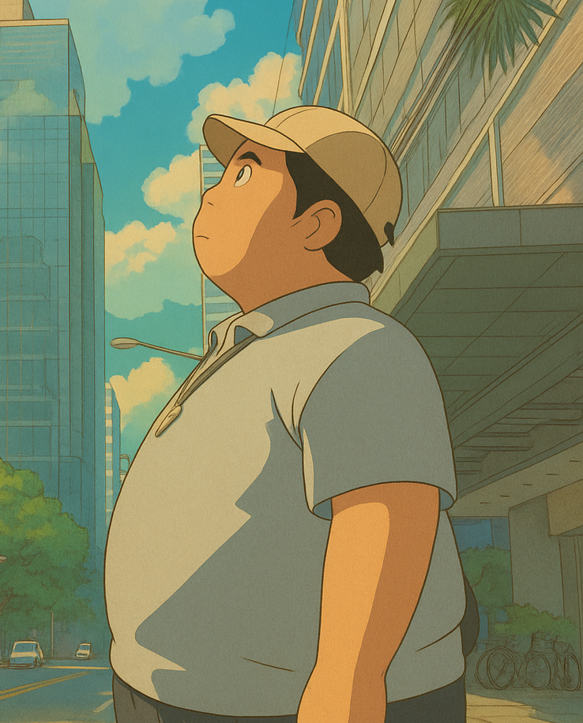

Unlocking Potential, One Byte at a Time.
Hi, I'm Christopher Jan, aspiring software developer actively involved in the web development world, focused on developing scalable and efficient systems. I am a solution minded developer with a hunger for learning new technologies and the knowledge to keep your application running at peak performance and high quality.
Download Resume